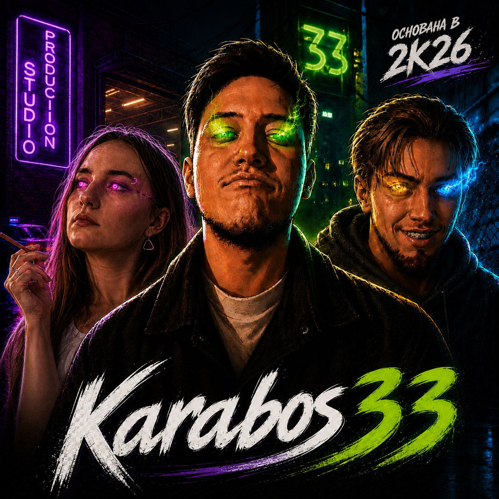

TODM PERSONNEL · ACTIVE FILES
Команда TODM
Люди, которые превращают одну вселенную в книги, игры и визуальные проекты. Их личные дела теперь находятся на общей странице проекта.
Открыть раздел команды
TODM PERSONNEL · ACTIVE FILES
Люди, которые превращают одну вселенную в книги, игры и визуальные проекты. Их личные дела теперь находятся на общей странице проекта.
Открыть раздел команды